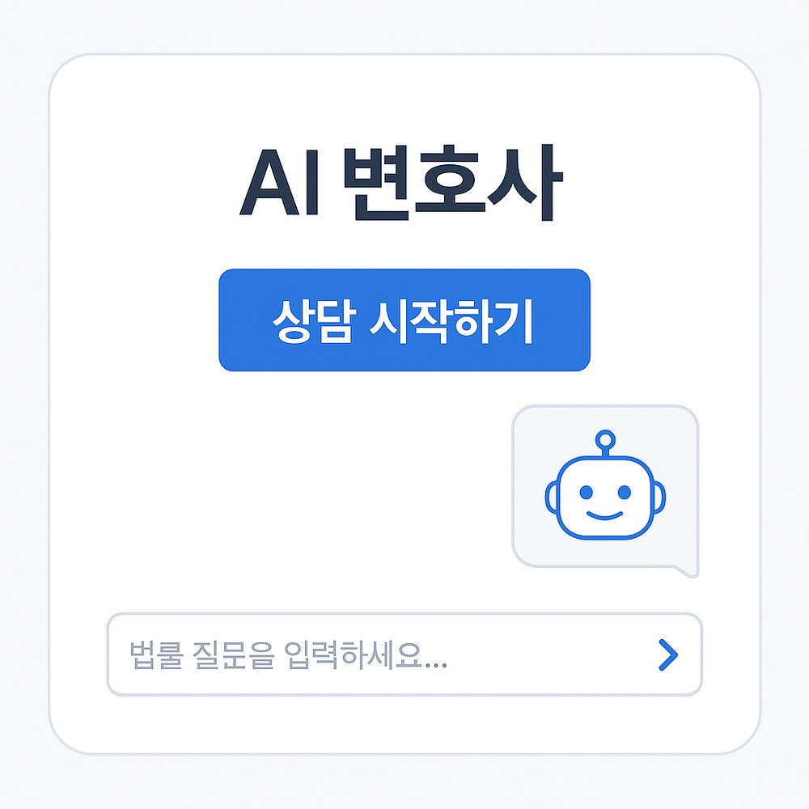
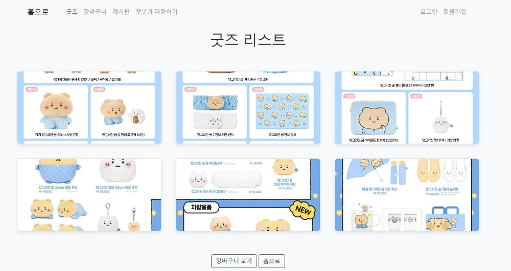

LLM Application
프롬프트 설계, 모델 선택, 스트리밍 응답 처리, 실패 유형 분석까지 서비스 관점에서 다뤘습니다.
- Ollama / Gemini 백엔드 실험
- 실시간 대화 구조 설계
- 출력 정제·가드레일 구현
SELECTED WORK

PROJECT · knowledge-assistant
Claude Code 바이브코딩으로 설계부터 하이브리드 검색·재순위화 RAG 파이프라인 구현, Vercel·Render 실배포와 트러블슈팅까지 전 과정을 진행했습니다.
자세히 보기
PROJECT · legal-consultation-ai
Llama 3.1 8B를 LoRA로 파인튜닝해 만든 법률 상담 서비스. 데이터 정제부터 학습, Gradio 배포까지 4인 팀에서 직접 맡아 진행했습니다.
자세히 보기PROJECT · vtuber-companion
Ollama와 Gemini 백엔드를 실시간으로 교체해가며 소형 로컬 모델의 실패 유형을 규칙 기반으로 보정했습니다.
자세히 보기
PROJECT · goods-shop
카카오톡 이모티콘 캐릭터 굿즈를 판매하는 Java MVC 쇼핑몰. 장바구니, 게시판, 챗봇 프로토타입까지 개인 개발했습니다.
자세히 보기PROJECT · hackathon-seolstudy
블레이버스 제4회 MVP 개발 해커톤. 6인 팀에서 프론트엔드를 맡아 수능 학습 코칭 플랫폼을 빠르게 구현했습니다.
자세히 보기PROJECT · skin-disease-classifier
여드름·습진·피부암·정상 피부 4종을 분류하는 ResNet 스타일 CNN을 skip-connection까지 직접 설계했습니다.
자세히 보기PROJECT · drowsy-reading-stand
Dlib 얼굴 랜드마크와 CNN 눈 상태 분류로 졸음을 감지해, 아두이노 서보모터로 각도를 자동 조절하는 독서대를 2인 팀에서 만들었습니다.
자세히 보기ABOUT THE WORK
지원 포지션에 맞춰 LLM 기반 서비스 개발 경험을 중심으로 정리했습니다. 로컬 환경에서 돌아가는 실시간 음성 AI부터, 법률 도메인에 맞춘 파인튜닝 모델까지 직접 실험하고, 결과를 서비스 형태로 연결해본 경험이 있습니다. 단순히 모델을 돌리는 데 그치지 않고, 실패 지점을 찾고 개선하는 엔지니어링에 가치를 두고 작업했습니다. 이를 통해 실제 제품 개발에 가까운 흐름을 익혔고, 코드와 실험 결과를 함께 전달하는 능력도 키웠습니다.
CORE SKILLS
프롬프트 설계, 모델 선택, 스트리밍 응답 처리, 실패 유형 분석까지 서비스 관점에서 다뤘습니다.
LoRA 기반 파인튜닝과 데이터 정제를 통해 모델의 도메인 적합성을 높이는 경험이 있습니다.
API 서버, 웹 인터페이스, 모델 학습 파이프라인까지 연결해본 폭넓은 구현 경험을 가지고 있습니다.
PROFILE